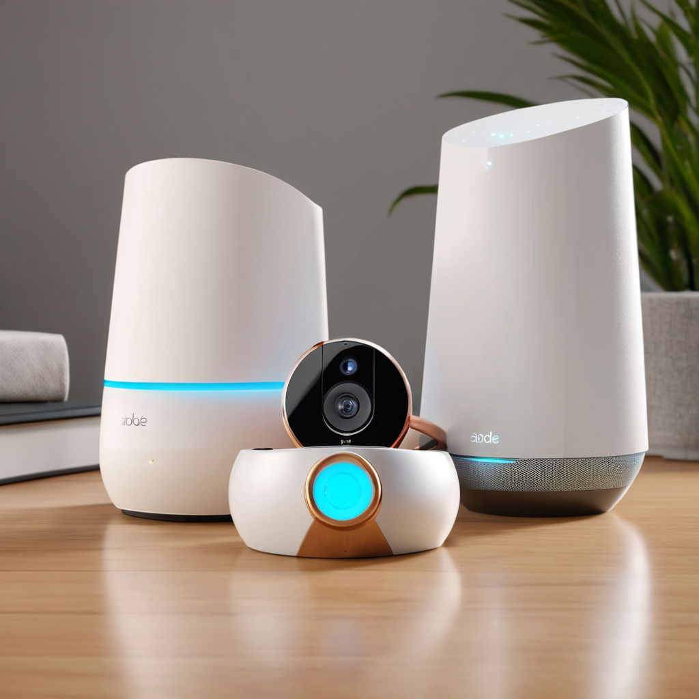
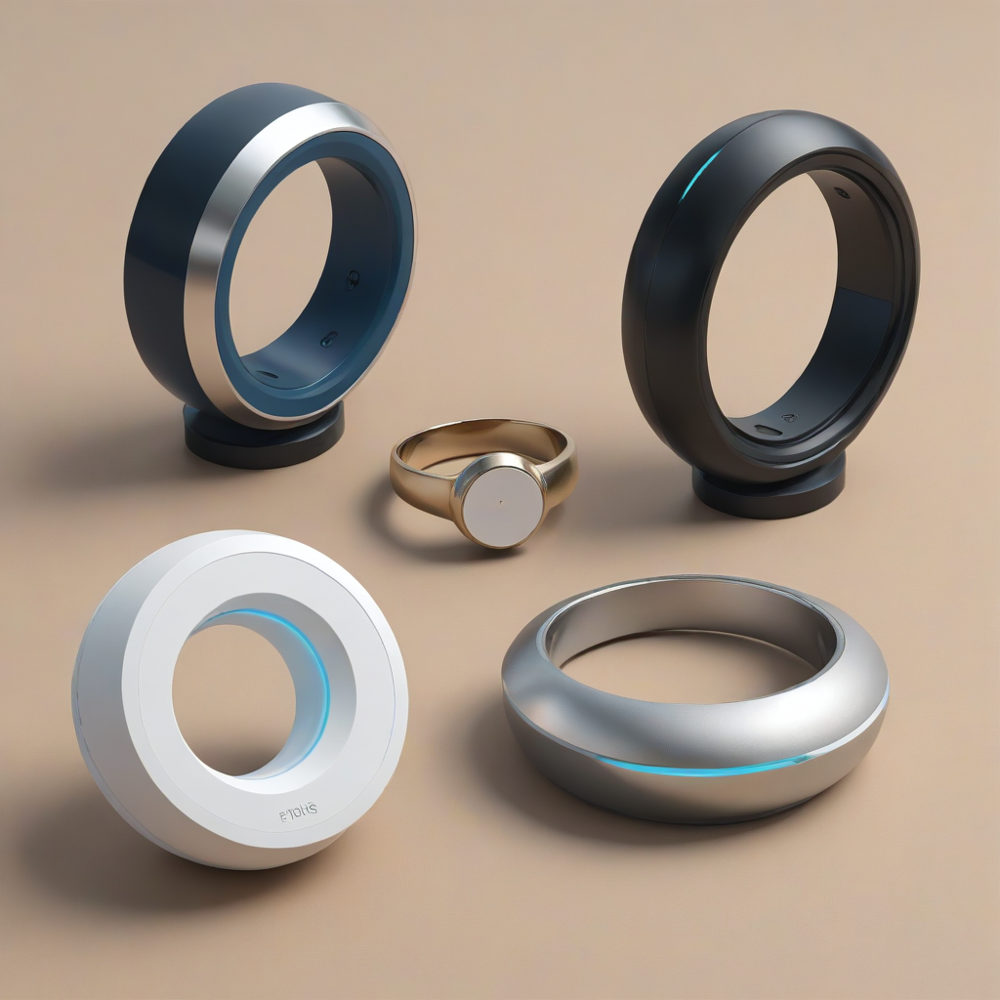
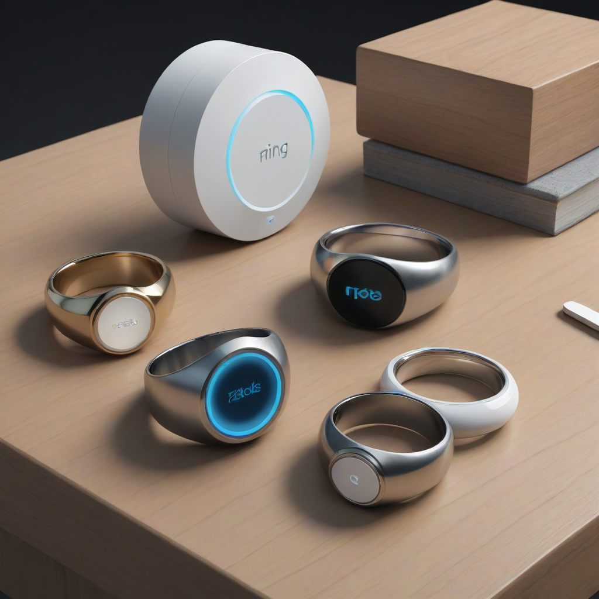

Quick Answer: For budget-conscious homeowners prioritizing video, Ring offers the best ecosystem integration. For a robust, no-contract alarm system with a straightforward setup, SimpliSafe remains the industry leader. If you need extensive Abode smart home integration with Z-Wave and Matter support, Abode is the superior choice for tech enthusiasts. All three systems are excellent DIY home security system 2026 options, but your decision should hinge on whether you prioritize camera video quality (Ring), alarm reliability (SimpliSafe), or smart automation (Abode).
As we move further into 2026, the landscape of residential security has shifted dramatically away from professional installation contracts toward flexible, homeowner-controlled solutions. The days of being locked into a three-year contract with a security company that charges hundreds of dollars for equipment are largely behind us. Today, homeowners and renters alike demand systems that are easy to install, mobile-friendly, and capable of integrating with the smart devices already in their homes. This shift has given rise to the "Big Three" of DIY security: Ring, SimpliSafe, and Abode.
Choosing the right system is not just about lowering your insurance premiums; it is about peace of mind and actionable safety. A security system should deter intruders, alert you to emergencies like smoke or carbon monoxide, and integrate seamlessly into your daily life without becoming a nuisance. However, with so many options available, comparing features, monitoring costs, and hardware longevity can be overwhelming. This comprehensive guide breaks down the critical differences between these three market leaders to help you make a safe, informed decision for your property.
In this comparison, we will look beyond the marketing slogans. We will analyze the actual hardware durability, the reality of Ring alarm monitoring costs, the reliability of cellular backup, and the depth of smart home connectivity. Whether you are looking for a home security system without monthly fee options or a fully monitored solution, understanding the nuances between SimpliSafe vs Ring features and Abode's automation capabilities is essential. Let's dive into the details to determine which system protects your home best.
Overview of the Contenders

Before comparing specific features, it is vital to understand the philosophy behind each brand. While they all function as intrusion detection systems, their target audiences and core strengths differ significantly.
Ring is owned by Amazon and focuses heavily on the video ecosystem. Their security system is often an extension of their famous video doorbells and floodlight cameras. Ring is ideal for users who want a unified app experience where their doorbell, cameras, and alarm sensors live under one roof. Their brand recognition is high, and their hardware is widely available in retail stores.
SimpliSafe is the veteran of the DIY security world. They do not make cameras as their primary selling point; instead, they focus on the alarm system itself. Their base stations are known for reliability, and their monitoring service is highly rated for speed of dispatch. If your primary goal is a traditional burglar alarm that works perfectly without needing a complex smart home setup, SimpliSafe is often the top recommendation.
Abode positions itself as the smart home security system. They were early adopters of Z-Wave and Zigbee protocols, allowing their sensors to control lights, locks, and thermostats natively. In 2026, Abode is also a strong proponent of the Matter sta

Hardware and Installation Comparison
The physical hardware is the backbone of any security system. In 2026, the expectation is that installation should be plug-and-play, requiring no tools or drilling. All three brands meet this standard, but the quality of components varies.
Base Stations and Connectivity
The base station acts as the brain of the system. It communicates with sensors and connects to the monitoring service.
- Ring Alarm (4th Gen): Uses a 4G cellular backup on the Pro plan. It connects via Wi-Fi but relies heavily on the Amazon ecosystem. The design is compact and modern.
- SimpliSafe (Third Gen): Features a built-in 12-month battery backup and a backup cellular connection included with monitoring plans. Their base station is known for its loud siren, which is a critical deterrent.
- Abode (Pro 2.0): Offers a hub that supports both Z-Wave and Zigbee. This allows for a wider range of third-party devices to connect directly to the hub without needing additional bridges.
Sensors and Detectors
Sensors are what actually detect the intrusion. We look for range, battery life, and battery type.
- Range: All three offer up to 200 feet of range in ideal conditions. However, SimpliSafe often reports fewer connectivity issues in larger homes with complex layouts.
- Battery Life: Ring and SimpliSafe sensors typically last about 3-5 years on a single CR123 or CR1632 battery. Abode sensors are similar but may drain faster if used for automation tasks.
- Variety: Abode offers the widest range of specialty sensors, including vibration sensors and water leak detectors with advanced automation triggers.
Cameras and Video Integration
This is where the systems diverge most. Ring's security system integrates natively with Ring cameras. You can set a camera to record when the alarm is triggered. SimpliSafe has introduced video doorbells and indoor cameras, but they are often sold separately and feel like add-ons rather than core components. Abode does not manufacture its own cameras; instead, it integrates with third-party IP cameras via Z-Wave or Wi-Fi, which offers flexibility but requires more configuration.
If you already own Ring cameras, sticking with the Ring Alarm system simplifies your app experience. If you prefer high-end third-party cameras like Arlo or Google, Abode offers better native support for those devices within the security logic.
Monitoring Plans and Pricing Structure
Pricing is often the deciding factor for homeowners. It is important to distinguish between the cost of equipment and the cost of Ring alarm monitoring costs (and its competitors). All three systems offer a "Self-Monitoring" option, which functions as a home security system without monthly fee for the monitoring service, though you still pay for the hardware.
Ring Security Plans
Ring has two main tiers: Protect Basic and Protect Plus.
- Protect Basic: Includes professional monitoring for one device. This is often insufficient for a whole home.
- Protect Plus: Covers all devices at one location. This is the standard plan most users need for full protection. It includes extended warranty on equipment.
- Pricing: Ring is competitive, often running promotions. However, without a subscription, you lose professional monitoring and video recording history for cameras.
SimpliSafe Monitoring
SimpliSafe is known for its transparent pricing with no hidden fees.
- Standard Plan: Includes professional monitoring, cellular backup, and smart home features. No contract.
- Interactive Plan: Adds remote arming/disarming and video verification.
- Pricing: SimpliSafe often includes monitoring for the first year with kit purchases. The monthly rate is generally stable and predictable.
Abode Monitoring
Abode offers a "Pro" monitoring plan that integrates with their automation features.
- Standard: Basic monitoring.
- Plus: Includes video verification and smart home automation triggers.
- Pricing: Abode can be slightly more expensive if you utilize the full automation suite, but the flexibility justifies the cost for tech-savvy users.
When considering the best DIY home security system 2026, remember that the "no monthly fee" option usually means you receive notifications on your phone only. If you are asleep or at work, a professional monitoring service is crucial to dispatch 911 services automatically. We recommend budgeting for at least the basic professional monitoring tier for all systems.
Smart Home Integration and Automation
In 2026, a security system is useless if it exists in a vacuum. It should interact with your lights, locks, and thermostat. This is where Abode smart home integration shines compared to the competition.
Abode: The Automation Leader
Abode was built on the premise of automation. Because it uses Z-Wave and Zigbee, it can talk to thousands of devices.
- Scenario: You can set a rule so that if the front door sensor opens at 10 PM, the hallway lights turn on automatically.
- Locks: Abode integrates with Schlage and Yale locks natively. When you arm the system, the locks engage. When you disarm them, they unlock (optional).
- Matter Support: Abode is fully compliant with the Matter standard, meaning you can control it via Apple Home, Google Home, or Alexa without complex workarounds.
Ring: The Ecosystem Leader
Ring integrates deeply with Amazon Alexa.
- Voice Control: You can arm the system using voice commands via Echo devices.
- Video Link: Ring cameras can trigger the alarm if they detect motion while the system is armed.
- Limitations: Ring is less flexible with non-Amazon devices. Integrating a third-party smart lock often requires a workaround or a separate hub.
SimpliSafe: The Focused Approach
SimpliSafe keeps it simple. They offer Smart Locks and Cameras that work with their base station.
- Compatibility: They work with Alexa and Google Home for basic commands.
- Focus: They do not try to control your thermostat or every smart bulb in the house. Their integration is designed to support the alarm, not replace a whole-home automation hub.
If you are building a full smart home, Abode is the clear winner. If you just want your doorbell to talk to your alarm, Ring is sufficient. If you just want an alarm that works, SimpliSafe is best.
Ring vs SimpliSafe vs Abode: Feature Comparison Table
To make the decision easier, we have compiled a side-by-side comparison of the critical specifications available in 2026. This table highlights the differences in connectivity, monitoring, and smart features.
| Feature | Ring Alarm | SimpliSafe | Abode |
|---|---|---|---|
| Primary Focus | Video & Ecosystem | Reliable Alarm | Smart Automation |
| Installation | DIY (No Tools) | DIY (No Tools) | DIY (No Tools) |
| Cellular Backup | With Pro Plan | With Monitoring Plan | With Pro Plan |
| Smart Home Protocol | Wi-Fi / Zigbee | Proprietary / Z-Wave | Z-Wave / Zigbee / Matter |
| Video Integration | Native (Ring Cameras) | Native (SimpliSafe Cameras) | Third-Party (IP Cameras) |
| Monitoring Cost (Approx) | $10 - $20/mo | $17 - $26/mo | $16 - $30/mo |
| Contract Required? | No | No | No |
| Best For | Amazon Users | Security First | Smart Home Builders |
Pros and Cons of Each System
To provide a truly honest assessment, we must look at the drawbacks. No system is perfect. Understanding the downsides helps you avoid frustration later.
Ring Alarm Pros and Cons
Pros:
- Seamless integration with Ring Doorbells and Cameras.
- High brand recognition and easy to find support.
- Competitive pricing for equipment bundles.
- Strong video verification features for monitoring.
- Requires a subscription for most useful features (video history, monitoring).
- Privacy concerns regarding Amazon data collection.
- Less flexible with non-Amazon smart home devices.
SimpliSafe Pros and Cons
Pros:
- Extremely reliable alarm performance.
- No long-term contracts; cancel anytime.
- Excellent customer support reputation.
- Hardware is durable and long-lasting.
- Video features are an afterthought compared to Ring.
- Smart home automation is limited compared to Abode.
- Some users report difficulty reaching support during peak times.
Abode Pros and Cons
Pros:
- Best-in-class Abode smart home integration.
- Largest selection of third-party compatible devices.
- Local control options for privacy-conscious users.
- Highly customizable automation rules.
- Higher upfront cost for advanced hubs.
- Setup can be slightly more complex for non-tech users.
- Smaller brand recognition makes resale value of equipment lower.
Mobile App and User Experience
The app is your interface with your home. It must be reliable, fast, and intuitive. In 2026, latency is a major concern. When an alarm triggers, you want a notification instantly.
Ring App: The Ring app is polished but cluttered. Because it handles cameras, doorbells, and alarms, the interface can feel crowded. Notifications are generally fast, but the sheer volume of alerts from cameras can be overwhelming. The video playback is smooth, but requires a subscription.
SimpliSafe App: SimpliSafe's app is designed for simplicity. The "Arm" and "Disarm" buttons are large and prominent. Notifications are clear and distinct. The interface does not try to do everything, which makes it less prone to bugs. However, customizing automation within the app is less intuitive than Abode.
Abode App: The Abode app is a power user's dream. It allows for complex scene creation. However, for a basic user, the number of menus can be intimidating. The app is stable, but the learning curve is steeper. For those who want to control their entire home from one screen, it is unmatched.
Common Concerns and Troubleshooting
Homeowners often worry about what happens when things go wrong. Power outages, Wi-Fi cut, or false alarms are real scenarios.
Power Outage Protection
All three systems have battery backups in the base station. In the event of a power outage, the system will switch to battery power. SimpliSafe is known for having the longest battery backup life in its base station, often lasting 24+ hours. Ring and Abode typically offer 12-24 hours depending on the model and usage. This is a critical safety feature to ensure the system works during a storm or outage.
Wi-Fi Dependency
Do not rely solely on Wi-Fi. If your internet goes down, you need a cellular backup. All three brands offer this, but it is often tied to the monitoring plan. If you choose a home security system without monthly fee for monitoring, you may lose the cellular backup. This means if your Wi-Fi is cut by a burglar, your system cannot call for help. We strongly advise purchasing the monitoring plan that includes cellular backup.
False Alarms
False alarms can result in fines from local police departments. Ring and SimpliSafe offer video verification, which allows the monitoring center to see the intrusion before dispatching police. This significantly reduces false alarm incidents. Abode also supports video verification through integrated cameras. Proper placement of motion sensors (avoiding pets and sunlight) is the first line of defense against false alarms.
Frequently Asked Questions
FAQ
Can I use these systems without a monthly subscription?
Yes, all three brands allow you to use the equipment without a monthly fee. This is known as self-monitoring. You will receive alerts on your phone, and the siren will sound locally. However, without a professional monitoring plan, 911 will not be called automatically. You also lose features like video history and cellular backup on most plans.
Which system is better for renters?
SimpliSafe and Ring are the best choices for renters. They are wireless and use adhesive tape or small screws that leave minimal marks on walls. Abode is also a great option, but the setup complexity might be higher. When moving out, you can easily take the sensors and base station with you to your new apartment.
Do these systems work with Alexa and Google Home?
Yes. All three systems integrate with Amazon Alexa and Google Assistant. You can arm and disarm the system using your voice. Ring has the tightest integration with Alexa, while Abode has the best integration with both platforms for automation tasks like turning lights on/off.
What happens if the battery in my sensor dies?
The mobile app will send you a notification when a sensor battery is low. You should replace the battery promptly to avoid gaps in security. Most sensors use standard CR123 or CR1632 batteries, which are widely available. The systems usually alert you when the battery is at 10% or lower.
Is video verification worth the extra cost?
Absolutely. Video verification allows the monitoring center to watch a live stream of your camera before dispatching emergency services. This prevents false alarm fines and ensures police are only sent when a real threat is verified. This feature is standard in higher-tier plans for Ring and SimpliSafe.
How do I cancel my monitoring plan?
All three companies operate on a month-to-month basis with no long-term contracts. You can cancel online through your account portal or by calling customer support. There are no early termination fees, which is a major advantage over traditional security companies.
Conclusion and Safety Recommendations
Selecting the right home security system is a balance between budget, technical capability, and safety needs. After analyzing the hardware, pricing, and features of the Ring vs SimpliSafe vs Abode contenders, here is our final verdict for 2026.
If you want the best DIY home security system 2026 for straightforward protection, choose SimpliSafe. It is the most reliable alarm system with the least amount of fuss. It is ideal for families who want to sleep soundly knowing their home is monitored without worrying about complex smart home setups.
If you are already invested in the Amazon ecosystem or prioritize video doorbells, choose Ring. The integration between the alarm and the camera is seamless, and the pricing is competitive. Just be mindful of the subscription costs required to unlock video features.
If you are a tech enthusiast who wants to control your locks, lights, and thermostat, choose Abode. The Abode smart home integration capabilities are unmatched. It turns your security system into a smart home hub, offering automation that can enhance safety (like locking doors automatically) and convenience.
Final Safety Steps:
- Layer Your Security: Do not rely on the alarm alone. Combine it with good exterior lighting and locked doors.
- Enable Cellular Backup: Never skip the plan that includes cellular backup. It is your lifeline if the internet is cut.
- Test Regularly: Test your sensors and siren once a month to ensure batteries are healthy and connectivity is strong.
- Keep Codes Private: Do not share your security code on social media or with delivery personnel.
Investing in a security system is investing in your family's safety. Whether you choose the budget-friendly flexibility of a home security system without monthly fee or the full-featured professional monitoring, the most important step is taking action to secure your home today. Review the best home security systems guide for more options, or check out our guide on alarm monitoring costs to finalize your budget.